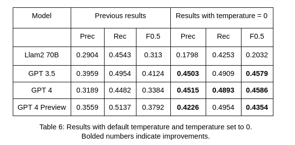

For an ML course during my Msc study, I did a rather interesting project on evaluating Llama-2 models (7B, 13B and 70B versions) and GPT models (GPT3.5, GPT4 and GPT4-Preview) on the Grammatical Errors Correction (GEC) Task.
You can read my project report in this pdf. But below are a few key takeaways:
Although we usually think of LLMs, esp. GPT3.5 onwards, as having mastered the art of writing, and therefore, can correct grammar / vocabulary mistakes with ease. There is no doubt about that, but to evaluate their accuracy using existing benchmarks turned out to be difficult. The main reason was that LLMs’ corrections are more unpredicatable, at least from the view of the Test set. This created a lot of false positives → adversely affected both precision and recall.
I used the ERRANT toolkit and 400 sentences taken from the Dev set of the BEA 2019 Shared Task for evaluation. The results showed that they were “mediocre” GEC systems. This highlights the challenge of measuring accuracy of LLMs. Below is Table 6 from the report, indicating the highest F0.5 obtained.

Another big takeaway from this project for me was a better appreciation of the challenge in benchmarking LLMs. Compared to previous generations of “in-the-box” models, LLMs are much more challenging to measure.